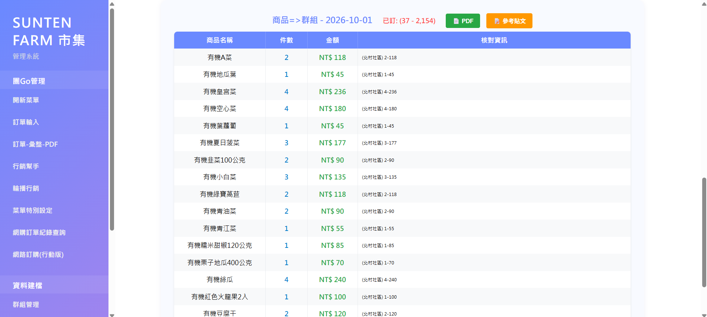
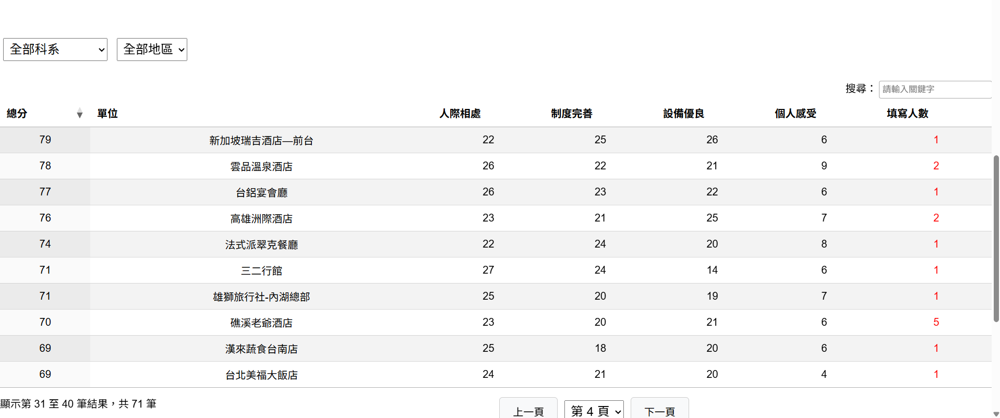
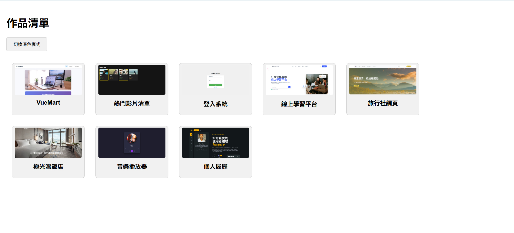

HTML
建立具有清楚結構與語意的網頁內容。
01 / ABOUT
你好，我叫籃郁翔，目前正在尋找前端工程師助理的職位。
我有獨立完成互動式網站與軟體作品的經驗，並善於運用 AI 輔助開發、提升工作效率。
我畢業於中餐廚藝系，大學期間接觸網站架設後開始對前端產生興趣，並持續透過課程與專案累積實作經驗。未來希望持續精進前端，也逐步朝後端工程發展。
02 / SKILLS
建立具有清楚結構與語意的網頁內容。
製作響應式版面與一致的視覺樣式。
實作互動效果與基本的資料處理。
運用元件化方式建立前端介面。
03 / PROJECTS
店家內部工具 · 獨立開發
為店家打造團購作業管理工具，涵蓋商品、群組、菜單、訂購人與訂單管理，並支援訂單彙整及 PDF／Excel 匯出。
系統透過後端 API 串接 SQLite 資料庫，儲存並管理訂單、商品、群組、菜單及訂購人等資料；另處理手機操作與新舊訂單格式相容。

Wix 網站製作 · 獨立完成
為餐旅相關科系學生整理實習單位資訊，協助學弟妹在選擇前多一份參考。
依科系、地區與關注條件瀏覽資料，查看實習心得與評分，也能透過表單分享經驗、回饋系統。

Android App · MIT App Inventor · 獨立開發
使用 MIT App Inventor 製作，依照點餐、出餐與工作站情境，拆分為不同用途的 Android App。
整套系統包含點餐、內用菜口、外帶菜口，以及各區站專用 App。
課程練習作品 · 獨立實作
整理並實作前端課程所學，作為持續累積與呈現學習成果的作品集。
內容涵蓋 HTML、CSS、JavaScript 與 Vue 3 的應用練習。

以網站與 Android App 等不同形式，持續累積實作經驗。
04 / CONTACT
如果有合適的前端工程助理機會，歡迎與我聯絡。